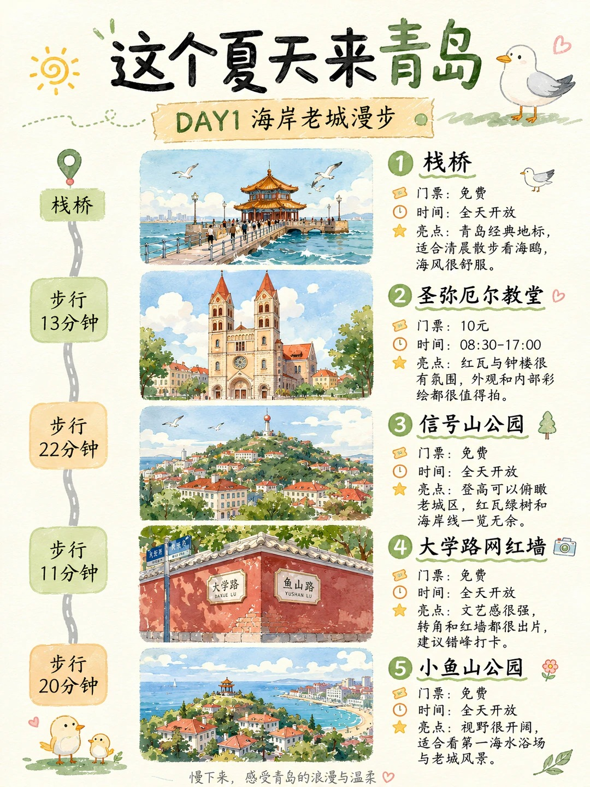
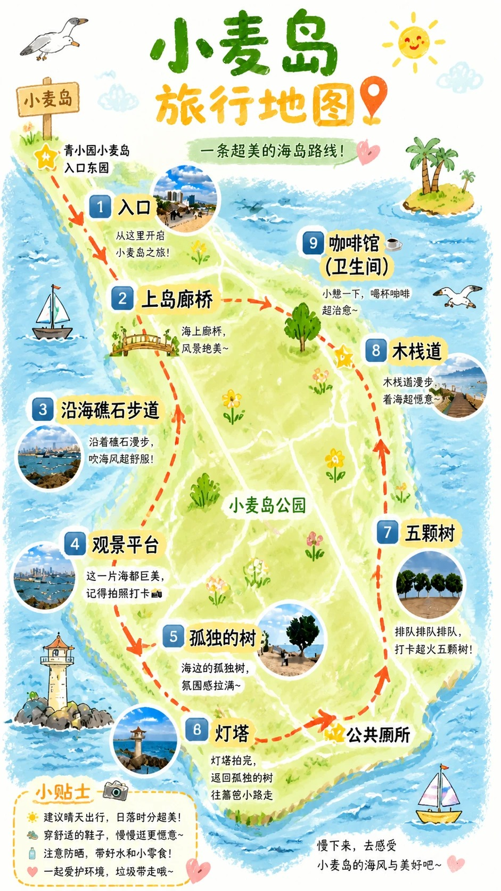
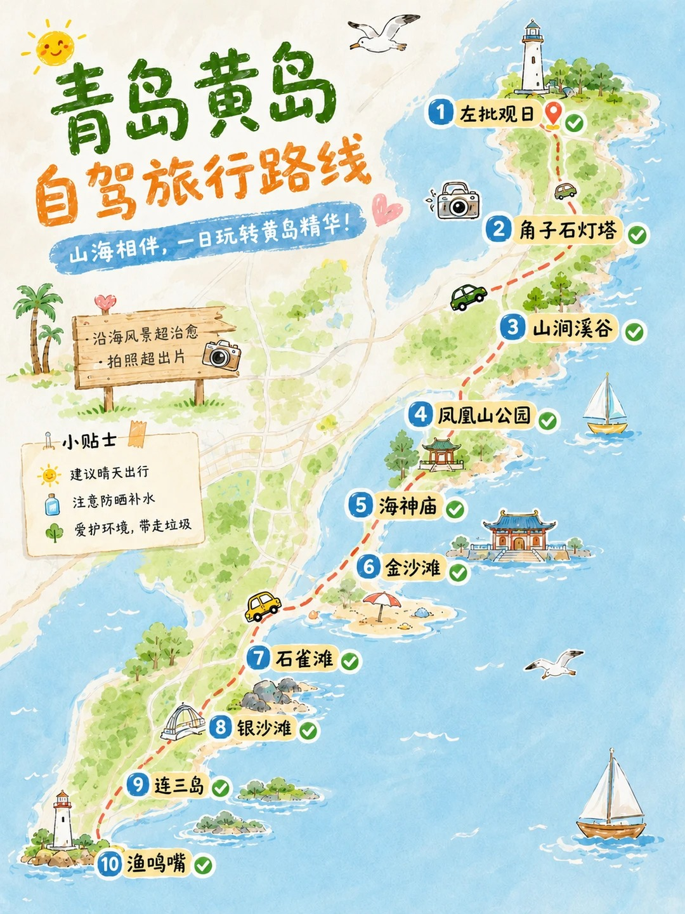
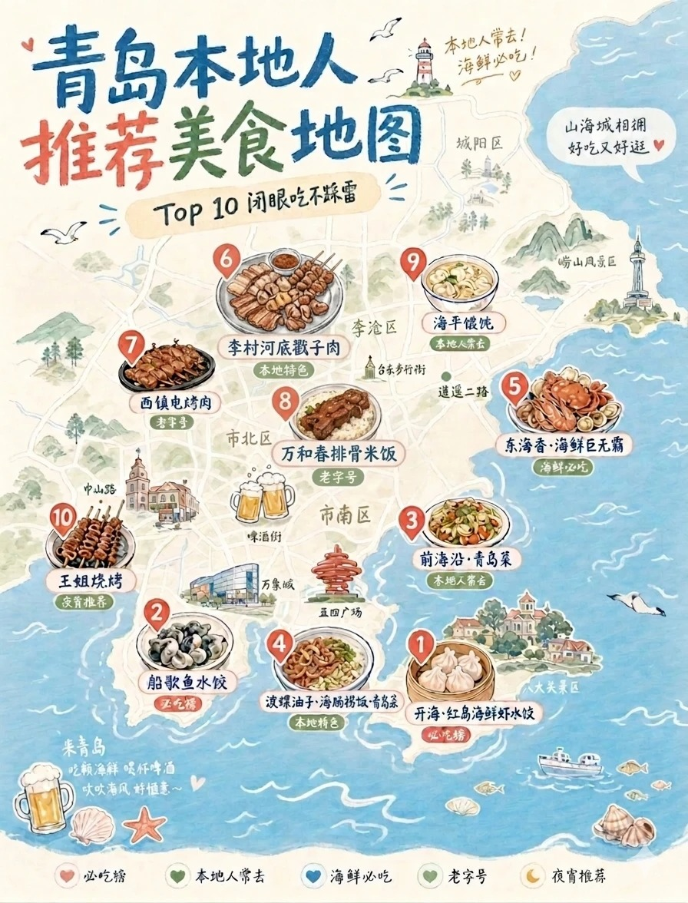
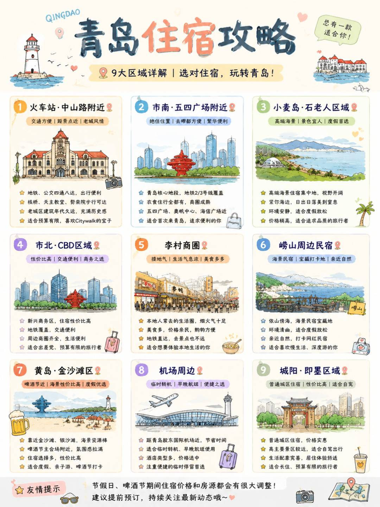

第一次来
经典三日是最稳妥的骨架，老城、东部海岸和小麦岛都照顾到。
QINGDAO COASTAL GUIDE · 2026
老城怎么走、海鲜怎么吃、酒店住哪片。把路线、用餐和住宿放在一起，安排舒服的一天。
V3.2 · 更新于 2026.09.10 · 美食与住宿增订版，网页 / PDF 同步。

FIRST THINGS FIRST
不必从头看到尾。按天数、同行人和天气，直接拿走适合你的模块。
经典三日是最稳妥的骨架，老城、东部海岸和小麦岛都照顾到。
慢游选老城；想高密度打卡，再选一日暴走线。
小麦岛半日、崂山一日、黄岛一日，都可以独立替换。
把最晒的中午留给休息，户外放在早晨和傍晚。
预约、开放时间、票价、公交和节庆日期可能变化，请以景区与交通运营方当日公告为准。
3 DAYS · 2 NIGHTS
每天只做一件重要的事：第一天认识老城，第二天走向海岸，第三天串起沙滩、海洋馆和小麦岛日落。
手绘图适合快速建立路线印象，实际导航请以出发当天地图路况为准。
BEYOND THE CITY
不要把崂山和黄岛拼在同一天。真正值得记住的，往往是没有赶路的那半天。

01HALF DAY
草地、礁石、海风和日落。适合把行程放慢，也适合亲子与朋友野餐。
 02
02FULL DAY
愿意早起、喜欢登高和山海视野就选它。完整留出一天，不要再拼黄岛。

03ROAD TRIP
适合自驾、沙滩和松弛感。跨海距离长，住市区时尽量避开晚高峰返程。
前三天走经典路线，第四天在崂山和黄岛之间二选一。
D1 老城 · D2 东部海岸 · D3 小麦岛 · D4 崂山 · D5 黄岛或返程慢游。
SEASONAL NOTES
九月可把开海时鲜安排进晚餐，早晚备一件外套。夏季户外放在早晚，中午休息；秋冬则把散步放在有日照的时段。出门前看天气与风力。
EAT WELL IN QINGDAO
芯拾光日常推荐 · 7 家餐饮品牌 + 1 个商场备选。按口味与当天路线选择，不必每家都打卡。
想吃一桌家常青岛味，或同行人口味不同。
想吃水饺，也想兼顾热菜的一餐。
想专门尝尝青岛鱼水饺。
想留一顿时间，认真吃海鲜。
喜欢简单蒸制、尝食材本味。
行程中间想吃得省时、有热乎主食。
想吃米饭，或带长辈、孩子需要一顿熟悉的饭。
住五四广场周边、雨天或带娃需要室内休息。
中山路附近吃午饭，找顺路的饺子、锅贴或家常菜；下午再走大学路。不要为了指定分店折返东部。
八大关游览后留午餐和休息；五四广场、万象城周边安排晚餐，饭后再看夜景。
雕塑园散步后先就近午餐，再去极地海洋公园。出园后留出休息和转场时间；小麦岛日落拍照后再吃晚餐，途中可备少量点心。
门店清单来自芯拾光近期推荐；未逐店核验实时营业、菜单、等位和人均。点“查找门店”后，请核对分店地址与近期信息，再安排出发。
旧图仅作风味印象，推荐名单以本页文字为准；图上位置不用于精确导航。

A GOOD PLACE TO STAY
根据住宿笔记整理的 9 区域选择指南。先选行程方向，再比较同日期、同房型的房源。
先比较五四广场；老城行程多，再看青岛站、中山路。
东部看小麦岛或石老人，西海岸看金沙滩，崂山另留完整一天。
市北、李村比总价也比路程；机场周边留给中转需求。
第一次来，重点走栈桥、教堂和老城街巷。
经典三日、亲子或长辈同行，希望吃饭和交通集中。
看海、慢住，愿意把时间留给东部海岸。
更看重房间条件、商场配套，接受乘车去海边。
喜欢生活街区、购物和本地餐饮，行程不全围着老城。
计划崂山游览或村落休闲，愿意专门住一晚。
沙滩、亲子、自驾，或行程重点就在西海岸。
深夜到达、清晨起飞，或临时转机。
探亲、办事、周边游，或自驾且接受较长通勤。
住宿为区域推荐，未指定酒店或核查房源。节假日、周末与大型活动期间，房价和余房会变化；“性价比”需要结合房型与通勤一起比较。

原图的概括性表述请结合上方文字说明理解，具体门店位置以地图为准。
SMALL THINGS MATTER
市区很热时，海岛、奥帆中心和山上海风一起，体感也会突然下降。
老城坡路、石阶和海岸步道比照片里更费脚，新鞋和薄底鞋都不适合走一整天。
至少提前 40 分钟到海边，先找位置，再慢慢等光线。日落后还有蓝调时刻。
上午老城、下午东部海岸已经足够。频繁穿城会把时间消耗在拥堵和停车上。
确认单价、重量、加工费和结算方式。对不熟悉的菜先少点，吃舒服更重要。
有人想逛街，有人想坐在海边。分开一两个小时再会合，也是一种舒服的旅行。
PLAN B
崂山、小麦岛和长距离海岸步行顺延，换成历史建筑、博物馆、室内展馆、书店与咖啡馆。
重点看风力，不只看温度。海岛、礁石和登高路线尽量取消，帽子和轻便物品收好。
把户外拆成上午和傍晚两段，中午回酒店休息。补水之外也要补充盐分。
山顶远景可能看不清，但老城树木、坡路和建筑更有氛围，可以改成街巷慢游。
攻略的作用，是让你少一点慌张，多一点选择。到了青岛以后，也请允许自己因为一阵海风、一家喜欢的小店，临时改变路线。
那些没有按照计划发生的时刻，往往才是回来以后最先想起的部分。
内容整理于 2026 年 9 月 10 日。美食为芯拾光近期推荐，住宿根据原笔记整理；品牌分店、实时价格、景区开放和交通班次请在出发前核对。